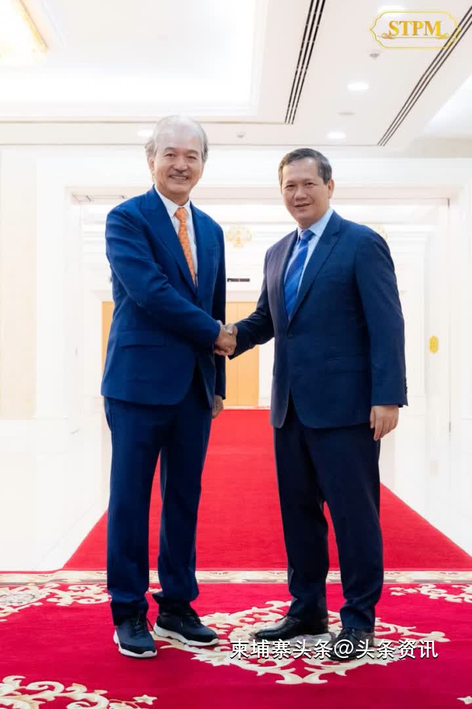
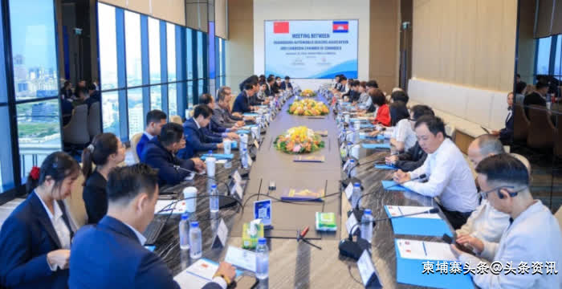

【柬埔寨头条综合报道】据柬媒11月29日报道，外企有意在柬埔寨运输和物流领域投资。【柬埔寨头条综合报道】据柬媒11月29日报道，外企有意在柬埔寨运输和物流领域投资。
作为回应，洪玛奈首相在得知该集团有兴趣在柬埔寨寻找互联基础设施投资机会后表示高兴。他强调了该领域的重要性，即确保柬埔寨在区域和全球的竞争力。 柬埔寨王国政府高度重视互联互通基础设施建设，以支持运输和物流领域，分别包括国际机场、深水港、高速公路、铁路升级和道路及大桥等基础设施。 洪玛奈首相还说，在吸引新投资者到柬埔寨的同时，政府始终优先确保私营部门在柬埔寨经营和投资的有利环境、竞争力、增长和成功。他鼓励公司继续与政府相关部门和机构进行更详细和全面的讨论，为公司未来制定业务计划。
【柬埔寨头条综合报道】据柬媒11月29日报道，访问柬埔寨的广东省投资者表示，对柬埔寨汽车行业感兴趣，并且正寻找在该行业的投资与合作机会。
11月28日，广东省汽车流通协会会长严斐率团访问柬埔寨，并与柬埔寨总商会会长陈丰明公爵举行会晤。 陈丰明公爵热烈欢迎中方的到来，并且还向其介绍柬埔寨汽车行业的现状以及潜在的合作领域。他强调了柬埔寨和中国之间的牢固关系，以及两国领导人根据柬埔寨“五角战略”和中国“一带一路”倡议促进经济关系的决心。 陈丰明公爵鼓励中国投资者利用汽车技术和技能在柬埔寨投资，因柬埔寨是一个政治稳定、地理位置优越、位于东盟的战略地理位置、劳动力年轻，以及营商环境良好的国家。 严斐会长表示对柬埔寨汽车市场感兴趣，并希望了解更多有关销量、新车和二手车需求以及汽车零部件需求的信息。 广东省代表团还学习柬埔寨汽车进口相关法律法规和政策，以及柬埔寨汽车贷款现状。来自广东省的中资公司对柬埔寨市场感兴趣，并且正研究在柬埔寨建立汽车组装和分销工厂的可能性。 双方乐观认为，中方此次访柬是推动柬中汽车行业关系及未来合作的重要进展。（编译：温宏明）